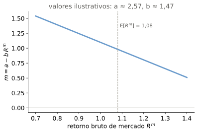
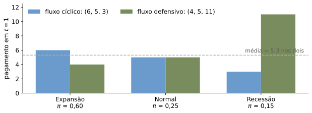
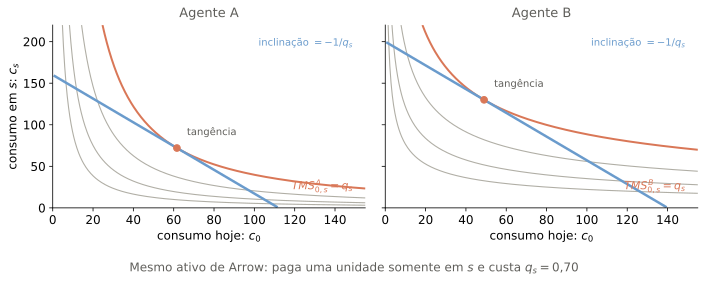
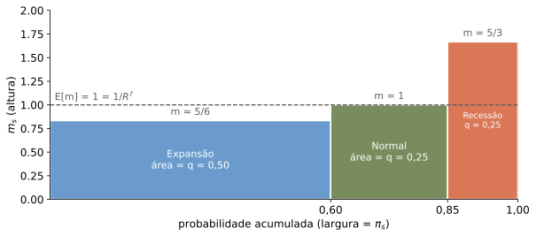
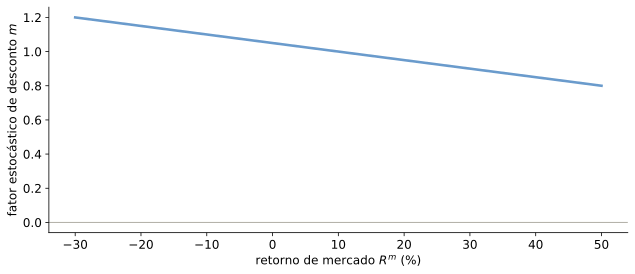

O Preço do Risco
Felipe Iachan
Onde estamos
- Na Aula 9, revisamos portfólio e CAPM: fronteira eficiente, carteira de mercado, SML
- O CAPM nos deu uma fórmula para o retorno exigido. De onde ela vem?
- Nestas aulas: uma teoria mais geral de apreçamento de ativos, da qual o CAPM é um caso especial
A pergunta
De onde vêm os preços que usamos para descontar fluxos arriscados: o custo de capital, o VPL de um projeto?
Mesmo fluxo esperado. Mesmo valor?
Dois fluxos amanhã, com as mesmas probabilidades de cada estado:

Se a recessão é o estado ruim, os dois fluxos valem o mesmo hoje?
De onde vêm os preços?
Precisamos de preços para:
- Custo de capital, custo de oportunidade do capital
- Análise de VPL
Dois ingredientes de qualquer preço:
- Dinheiro no tempo: juros, desconto (já vimos)
- Preço do risco: risco de quê, exatamente?
O roteiro: seis passos
- Um investidor sozinho: o preço é a soma dos pagamentos vezes a TMS
- Isso não basta: a TMS não se observa, muda com o tamanho e difere entre pessoas
- Mercados resolvem: o preço de R$1 em cada estado é o mesmo para todos
- Sem arbitragem, ativos negociados e fluxos replicáveis valem \(\sum_s q_s x_s\), com \(q_s>0\)
- Preço = média descontada + covariância com \(m\). Só o risco que anda com \(m\) tem preço
- CAPM: o caso em que \(m\) é uma reta no retorno de mercado
Temos: a pergunta. Falta: tudo. Começamos por um investidor sozinho.
Ao fim destas aulas, vocês devem saber responder
- Dois fluxos com a mesma média e a mesma taxa livre de risco: por que valem diferente? Qual o sinal do ajuste?
- O que garante um fator de desconto sobre o qual todos concordam? O que se perde sem mercado completo?
- De onde vem o \(r^*\) dos livros de finanças corporativas? O que o CAPM acrescenta?
O problema de portfólio de um agente
- Datas: \(t=\left\{ 0,1\right\}\)
- Incerteza apenas em \(t=1\): estados exógenos \(s\in S=\left\{ 1,2,...,|S|\right\}\)
- Acesso a um conjunto de ativos financeiros, \(J\)
- Cada ativo \(j\in J=\left\{ 1,...,|J|\right\}\):
- tem preço \(p^{j}\),
- paga (payoff) \(x_{s}^{j}\) no estado \(s\) em \(t=1\)
Nossa economia
Três estados amanhã. Um investidor com utilidade \(\log\), sem desconto (\(\beta = 1\)), consome 5 hoje e, amanhã, o que a firma paga.
| estado \(s\) | \(\pi_s\) | consumo \(c_s\) |
|---|---|---|
| 1 expansão | 0,60 | 6 |
| 2 normal | 0,25 | 5 |
| 3 recessão | 0,15 | 3 |
Hoje: \(c_0 = 5\).
| ativo | paga em \((s_1, s_2, s_3)\) | preço |
|---|---|---|
| título | (1, 1, 1) | ? |
| ação (a firma) | (6, 5, 3) | ? |
| seguro contra recessão | (0, 0, 1) | ? |
Os preços virão da teoria. Voltaremos a esta tabela a cada passo.
Crenças e preferências
Agente tem crenças \(\left\{ \pi_{s}\right\} _{s\in S}\) sobre a probabilidade dos estados (\(\pi_s>0\), \(\sum_{s\in S}\pi_{s}=1\)).
Agente tem dotações \(e=\left(e_{0},\left\{ e_{s}\right\} _{s\in S}\right)\) e preferências representadas pela utilidade
\[ U\left(C\right)=u_{0}\left(c_{0}\right)+\beta\underset{\mathbb{E}\left[u_{1}\left(c_{1}\right)\right]}{\underbrace{\sum_{s}\pi_{s}u_{s}\left(c_{s}\right)}} \]
Lê-se: \(e\) é a dotação (o que o agente tem antes de negociar); \(\beta\) é o desconto do futuro. O ativo de Arrow, adiante, é chamado \(A_k\) para não colidir com a dotação.
Restrições orçamentárias
Agente escolhe portfólio (quantidades \(z^{j}\) dos ativos) e consome (otimamente):
\[ c_{0}=e_{0}-\sum_{j}p^{j}z^{j} \]
\[ c_{s}=e_{s}+\sum_{j}x_{s}^{j}z^{j} \]
Lê-se: \(z^j\) é quanto compra do ativo \(j\) (negativo se vende).
Um argumento de perturbação
- Suponha que o portfólio \(\left\{ z^{j,*}\right\}\) é ótimo e leva a consumo \(\left(c_{0}^{*},c_{s}^{*}\right)\)
- O que aconteceria se o agente comprasse um pouco (\(d\epsilon\)) a mais do ativo \(j\)?
Perturbação: efeito no consumo
Utilidade cai em \(t=0\): \(-u^{'}\left(c_{0}^{*}\right)p^{j}d\epsilon\).
Efeito total vindo de \(t=1\): \(\beta\sum_{s}\pi_{s}u^{'}\left(c_{s}^{*}\right)\underset{x_{s}^{j}d\epsilon}{\underbrace{dc_{s}}}\).
A lógica da otimalidade
Efeito líquido na utilidade:
\[ dU=\color{#d97757}{\left[-u^{'}\left(c_{0}^{*}\right)p^{j}+\beta\sum_{s}\pi_{s}u^{'}\left(c_{s}^{*}\right)x_{s}^{j}\right]}d\epsilon \]
Se o termo em laranja:
- é maior que zero, comprar (\(d\epsilon>0\)) gera ganho de utilidade
- é menor que zero, vender (\(d\epsilon<0\)) gera ganho de utilidade
Ambos contradizem otimalidade. Logo o termo é zero.
Equação de Euler e TMS
Para o ativo \(j\), vale a Equação de Euler, que reescrevemos com a TMS:
\[ u^{'}\left(c_{0}^{*}\right)p^{j}=\beta\sum_{s}\pi_{s}u^{'}\left(c_{s}^{*}\right)x_{s}^{j} \]
\[ p^{j}=\sum_{s}TMS_{0,s}\,x_{s}^{j},\qquad TMS_{0,s}=\beta\frac{\pi_{s}u^{'}\left(c_{s}^{*}\right)}{u^{'}\left(c_{0}^{*}\right)} \]
- Lê-se: \(TMS_{0,s}\) é a taxa marginal de substituição entre consumo hoje e consumo no estado \(s\)
- O preço é um valor presente: a soma percorre os estados, cada um entra com a própria TMS
- Com multiplicadores de Lagrange, \(\lambda_s/\lambda_0 = TMS_{0,s}\) (apêndice)
Ganho: o preço de qualquer ativo saiu de uma única condição de otimalidade do investidor.
TMS com números
Na nossa economia, \(u(c)=\log c\) e \(\beta=1\), logo \(u'(c)=1/c\) e \(u'(c_0)=1/5\):
| estado \(s\) | \(\pi_s\) | \(c_s\) | \(u'(c_s)=1/c_s\) | \(TMS_{0,s}=\pi_s\,\dfrac{u'(c_s)}{u'(c_0)}=\pi_s\cdot\dfrac{5}{c_s}\) |
|---|---|---|---|---|
| 1 expansão | 0,60 | 6 | 1/6 | 0,50 |
| 2 normal | 0,25 | 5 | 1/5 | 0,25 |
| 3 recessão | 0,15 | 3 | 1/3 | ? |
Quanto é a TMS da recessão?
\(TMS_{0,3}=0{,}15\times 5/3=\) 0,25. Estado raro, mas consumo baixo: os dois efeitos se compensam e empata com o estado normal.
TMS e apreçamento: duas perguntas
Com base na \(TMS^{i}\), podemos responder:
- Por quanto um indivíduo estaria disposto a comprar um ativo arbitrário?
- Vale a pena investir em um projeto determinado?
Suponha que o indivíduo \(i\) possa investir em um projeto pequeno, fora do mercado: custo \(-x_{0}^{p}\epsilon\) e payoffs \(x_{s}^{p}\epsilon\).
- Qual o impacto sobre sua utilidade? Vale a pena fazer esse investimento?
Valuation pela TMS: uma intervenção local
- Partimos da carteira que o agente já escolheu otimamente
- Acrescentamos apenas \(\epsilon\) unidades de um projeto, com \(\epsilon\) pequeno
- Pergunta: esse acréscimo melhora ou piora a utilidade?
\[ \Delta U^{i}=u_0^{'i}\!\left(c_0^{i,*}\right)\,\epsilon\,NPV^i+o\left(\epsilon\right) \]
- O termo de primeira ordem decide para onde mover \(\epsilon\)
- Para um projeto grande, o consumo muda. A própria TMS muda
Não é o valor de uma firma inteira pela utilidade de uma pessoa: é uma comparação local.
A expansão em torno do ótimo
Aproximação linear em torno do ótimo (Teorema do Envelope): só entram derivadas de primeira ordem.
\[ U^{i}\left(C^{i}\right)=U^{i}\left(C^{i*}\right)+u_{0}^{'i}\left(c_{0}^{i*}\right)\left(-x_{0}^{p}\epsilon\right)+\beta^{i}\sum_{s}\pi_{s}^{i}u^{'}\left(c_{s}^{i*}\right)\left(x_{s}^{p}\epsilon\right) \]
Dividindo por \(u_{0}^{'i}\left(c_{0}^{i*}\right)\epsilon>0\), o ganho de utilidade tem o sinal de
\[ NPV^{i}\equiv-x_{0}^{p}+\sum_{s}{\color{#d97757}TMS_{0,s}^{i}}\,x_{s}^{p} \]
Ganho: a decisão de investir virou um VPL, com a TMS no lugar do fator de desconto.
A TMS é o fator de desconto, na margem
\[ \text{Vale investir}\iff NPV^{i}=-x_{0}^{p}+\sum_{s}{\color{#d97757}TMS_{0,s}^{i}}\,x_{s}^{p}\geq0 \]
- A taxa marginal de substituição serve como fator de desconto, na margem. E só na margem
- Ganho de utilidade do projeto: \(u^{'}\left(c_{0}^{i*}\right)NPV^{i}\)
- A mesma conta serve para valuation: quanto o agente \(i\) pagaria por um fluxo pequeno
Ganho: temos uma regra de investimento completa para um investidor. Passo 1 fechado.
Da TMS ao mercado
Três problemas para usar a TMS na prática
- A TMS não é observável
- Só vale para projeto pequeno: em projeto grande o consumo muda, a TMS muda
- A TMS pode diferir entre agentes
O que o mercado resolve
- O preço é observável
- O preço é o mesmo para todos
- O preço vale em qualquer escala
Preços revelam preferências. Mercados oferecem diversificação: o projeto deixa de ser comparável ao consumo de um agente isolado. Mercados completos, em particular, simplificam muito.
O roteiro: passo 3
- Um investidor sozinho: o preço é a soma dos pagamentos vezes a TMS
- Isso não basta: a TMS não se observa, muda com o tamanho e difere entre pessoas
- Mercados resolvem: o preço de R$1 em cada estado é o mesmo para todos
- Sem arbitragem, ativos negociados e fluxos replicáveis valem \(\sum_s q_s x_s\), com \(q_s>0\)
- Preço = média descontada + covariância com \(m\). Só o risco que anda com \(m\) tem preço
- CAPM: o caso em que \(m\) é uma reta no retorno de mercado
Temos: o preço pela TMS de um investidor e três razões para não parar aí. Falta: um preço que todos vejam.
Mercados completos: ativos de Arrow
Suponha que existe um ativo \(A_{k}\) com
\[ x_{s}^{A_{k}}=\begin{cases} 1, & s=k\\ 0, & \text{c.c.} \end{cases} \]
Isto é: paga \(1\) no estado \(k\) e \(0\) nos demais. Seu preço é \(q_{k}\), o preço de estado de \(k\).
CPO para um agente \(i\):
\[ u_{0}^{i'}\left(c_{0}^{i,*}\right)q_{k}=\beta^{i}\pi_{k}^{i}u_{k}^{i'}\left(c_{k}^{i,*}\right) \]
Logo,
\[ q_{k}=\frac{\beta^{i}\pi_{k}^{i}u_{k}^{i'}\left(c_{k}^{i,*}\right)}{u^{'}\left(c_{0}^{i,*}\right)}=TMS_{0,k}^{i} \]
- O lado esquerdo não depende de \(i\). Logo o direito também não, em equilíbrio
- Todos concordam sobre \(q_k\), mesmo com desconto, preferências ou probabilidades diferentes
Na nossa economia, o seguro é o ativo de Arrow da recessão. Seu preço é a TMS: 0,25.
Mesma inclinação, escolhas diferentes
Cada painel fixa o consumo nos outros estados e olha apenas para \((c_0,c_s)\).

- As retas podem ter interceptos diferentes; o que é comum é a inclinação \(-1/q_s\)
- Repetindo o corte para cada estado, \(TMS_{0,s}^{i}=q_s\) para todo agente \(i\)
Mercados completos: concordância geral
- Com estrutura completa de ativos de Arrow, preços \(q_{s}\): todos os agentes igualam \(TMS_{0,s}^{i}=q_{s}\)
- Todos concordam que um fluxo \(\left(x_{0},\left\{ x_{s}\right\}\right)\) vale
\[ V\left(x_{0},\left\{ x_{s}\right\}\right)=x_{0}+\sum_{s}q_{s}x_{s} \]
- Concordam sobre VPL e decisões de investimento. O mesmo vale para qualquer caso com mercados completos
Ganho: o VPL deixou de depender de quem calcula. Passo 3 fechado.
Apreçamento linear
Todo ativo transacionado nesta economia precisa satisfazer
\[ p^{j}=\sum_{s}q_{s}x_{s}^{j} \]
Prova em uma linha: o ativo é uma carteira de ativos de Arrow, \(x^j=\sum_s x^j_s A_s\), logo
\[ P\left(x^j\right)=P\Big(\sum_{s}x_{s}^{j}A_{s}\Big)=\sum_{s}x_{s}^{j}\,P\left(A_{s}\right)=\sum_{s}q_{s}x_{s}^{j} \]
- Caso contrário: desmembrar com lucro ou replicar mais barato, em escala ilimitada. Arbitragem (formalizamos a seguir)
- É uma regra linear, \(P\left(\theta x+\theta' y\right)=\theta P\left(x\right)+\theta' P\left(y\right)\) para escalares \(\theta,\theta'\). Toda regra linear se escreve como \(\sum_{s}q_{s}x_{s}\), com \(q_s\) os preços de estado
Ganho: o preço de qualquer fluxo é uma soma ponderada pelos preços de estado.
Exemplo: economia com dois estados
Duas datas, dois estados em \(t=1\) (\(s_1, s_2\)), probabilidades \(\pi=(0{,}6;\,0{,}4)\). Ativo livre de risco paga 1 em ambos; ativo arriscado (a) paga 3/2 em \(s_1\) e 1/2 em \(s_2\); ambos custam 1.
| ativo | paga em \(s_1\) | paga em \(s_2\) | preço |
|---|---|---|---|
| livre de risco (f) | 1 | 1 | 1 |
| arriscado (a) | 1,5 | 0,5 | 1 |
Matricialmente:
\[ X=\begin{bmatrix} 1 & 3/2\\ 1 & 1/2 \end{bmatrix},\qquad P=\begin{bmatrix} 1\\ 1 \end{bmatrix} \]
\(X^j\) (coluna \(j\)): payoffs do ativo \(j\). \(z\in\mathbb{R}^{J}\): portfólio; \(Xz\): seus payoffs.
É um mercado completo?
- Definição formal: \(\operatorname{Im}(X)=\mathbb{R}^{\#S}\), ou \(\operatorname{rank}(X)=\#S\)
- Ou seja: variando os portfólios \(z\in\mathbb{R}^{\#J}\), conseguimos descrever qualquer payoff que quisermos em \(\mathbb{R}^{\#S}\)?
- Quais os preços de estado \(q_1, q_2\)?
Resolvendo os preços de estado
Aplicando \(p^{j}=\sum_s q_s x_s^j\) a cada ativo:
\[ 1 = q_1 + q_2 \qquad 1 = 1{,}5\,q_1 + 0{,}5\,q_2 \]
\[ \implies q_1 = 0{,}5,\quad q_2 = 0{,}5 \]
Verificação: o ativo arriscado vale \(0{,}5\times 1{,}5+0{,}5\times 0{,}5=1{,}00\), igual ao seu preço. Com 2 ativos linearmente independentes para 2 estados, o mercado é completo e \(q\) é único.
Espaço de payoffs

Preço de estado é o preço de uma carteira concreta: \(A_1\) custa \(0{,}5\) e \(A_2\) custa \(0{,}5\).
Mercados incompletos e ativos redundantes
| Caso | \(X\) (linhas = estados) | \(P\) | Ativos \(\times\) Estados | É completo? |
|---|---|---|---|---|
| 1 | \(\begin{bmatrix}1\\1\end{bmatrix}\) | \(\begin{bmatrix}1\end{bmatrix}\) | 1 \(\times\) 2 | Não: faltam ativos |
| 2 | \(\begin{bmatrix}1 & 3/2 & 1/2\\1 & 1/2 & 1/2\end{bmatrix}\) | \(\begin{bmatrix}1\\1\\p^3\end{bmatrix}\) | 3 \(\times\) 2 | Sim, com ativo redundante (\(p^3\) é determinado) |
| 3 | \(\begin{bmatrix}1 & 3/2\\1 & 1/2\\1 & 1/2\end{bmatrix}\) | \(\begin{bmatrix}1\\1\end{bmatrix}\) | 2 \(\times\) 3 | Não: faltam ativos |
Leitura para o quadro: faltam payoffs independentes nos casos 1 e 3; no caso 2, sobra uma equação de preço.
Quando os preços de estado são determinados?
Os preços observados impõem, para cada ativo \(j\),
\[ p^j=\sum_s q_s x_s^j\qquad\text{ou, em forma compacta,}\qquad X'q=P \]
- Menos payoffs independentes que estados: menos equações que \(q_s\) desconhecidos; vários \(q\) funcionam
- Payoffs independentes suficientes para os estados: sistema determinado; \(q\) é único
- Ativo redundante: uma equação extra verifica a lei do preço único; se falhar, há arbitragem
Ausência de possibilidade de arbitragem
Uma economia admite arbitragem se existe um portfólio \(z\in\mathbb{R}^{J}\) tal que
\[ \sum_{j}p^{j}z^{j}\leq0\qquad\text{e, para cada }s,\qquad\sum_{j}x_{s}^{j}z^{j}\geq0 \]
com pelo menos uma desigualdade estrita.
- Isto é: gera excedente positivo em algum estado, ou hoje, sem sacrificar nada
- Se vale para \(z^j\), vale para todo \(\theta z^j\) com \(\theta>0\): não é condizente com equilíbrio
Teorema Fundamental de Apreçamento
Não há possibilidades de arbitragem em uma economia descrita pelos ativos \(j\in J\), payoffs \(X\in\mathbb{R}^{|S|\times|J|}\) e preços \(P\in\mathbb{R}^{|J|}\) se, e somente se, existe \(q\in\mathbb{R}_{++}^{|S|}\) tal que \(P'=q'X\).
Ou seja: temos apreçamento linear, com preços de estado positivos \(\left\{ q_{s}>0\right\}\), tais que \(p^{j}=\sum_{s}q_{s}x_{s}^{j}\) para cada ativo \(j\).
Apreçamento linear sozinho é mais fraco (lei do preço único): garante algum \(q\), não necessariamente positivo. A equivalência do Teorema é com a conjunção: linear e \(q\gg0\).
Ganho: ausência de arbitragem, sozinha, já dá preços de estado. Não precisamos de utilidade nem de crenças.
Arbitragem no exemplo
Na nossa economia, título a 1 e seguro a 0,25. Suponha que a ação passe a custar 6.
| carteira | custo hoje | paga em \(s_1\) | paga em \(s_2\) | paga em \(s_3\) |
|---|---|---|---|---|
| vender 1 ação | −6 | −6 | −5 | −3 |
| comprar 6 títulos | +6 | +6 | +6 | +6 |
| total | 0 | 0 | 1 | 3 |
Custa zero e paga \((0, 1, 3)\): arbitragem. Repetindo em escala, o lucro é ilimitado.
Sem arbitragem, o preço da ação fica entre 4,5 e 5,25: com \(q_3=0{,}25\) e \(q_1+q_2=0{,}75\), o preço é \(4{,}5+q_1\) com \(q_1\in(0;\,0{,}75)\).
Artefato: quando o preço vira arbitragem
- q1 = p − 0,5
- q2 = 1,5 − p
- E[Ra] − Rf = 1,1/p − 1
A reta cinza é {x : q·x = 0}, os payoffs de custo zero. A área cinza tem custo ≤ 0. Quando ela invade o quadrante positivo (cunha laranja), existe carteira de custo ≤ 0 que paga ≥ 0 com alguma desigualdade estrita. O intervalo sem arbitragem coincide com (menor, maior pagamento) só porque Rf = 1.
Lei do preço único: replicação
Se duas carteiras replicam o mesmo fluxo, seus pagamentos coincidem em cada estado:
\[ Xz=X\overline z\qquad\Longleftrightarrow\qquad \sum_j x_s^j z^j=\sum_j x_s^j\overline z^j\quad\text{para todo }s \]
Elas precisam ter o mesmo custo hoje:
\[ \sum_j p^j z^j=\sum_j p^j\overline z^j \]
- Caso contrário, compra-se a carteira barata e vende-se a cara: sobra dinheiro hoje e nada muda amanhã
- Isto é arbitragem
Valor fundamental de um fluxo replicável
Se um portfólio \(z\) replica o fluxo \(x\), isto é, \(x_s=\sum_j x_s^j z^j\) para todo estado \(s\), seu valor é
\[ V_0(x)=\sum_j p^j z^j=\sum_s q_s x_s=\mathbb{E}[m x] \]
- O valor não depende de qual carteira replica o fluxo
- É este número que comparamos ao investimento inicial para calcular o VPL
Replicação transforma um fluxo arriscado em um preço observável no mercado.
Completude e unicidade
- Ausência de arbitragem garante que existe \(q\gg0\) que precifica os ativos negociados
- Em mercado completo, \(q\) é único: resolvemos \(p^j=\sum_s q_s x_s^j\) para ativos independentes
- Em mercado incompleto, vários \(q\gg0\) podem precificar os ativos existentes
- Um fluxo novo, que não pode ser replicado, não tem valor único imposto apenas pela ausência de arbitragem
Ganho: ausência de arbitragem fixa o preço de toda réplica; completude estende esse resultado a qualquer fluxo. Passo 4 fechado.
O roteiro: passo 5
- Um investidor sozinho: o preço é a soma dos pagamentos vezes a TMS
- Isso não basta: a TMS não se observa, muda com o tamanho e difere entre pessoas
- Mercados resolvem: o preço de R$1 em cada estado é o mesmo para todos
- Sem arbitragem, ativos negociados e fluxos replicáveis valem \(\sum_s q_s x_s\), com \(q_s>0\)
- Preço = média descontada + covariância com \(m\). Só o risco que anda com \(m\) tem preço
- CAPM: o caso em que \(m\) é uma reta no retorno de mercado
Temos: preços de estado positivos, únicos com mercado completo. Falta: transformar a soma em esperança e separar tempo de risco.
Fator estocástico de desconto
Com preços de estado \(\left\{ q_{s}\right\}\) e probabilidades \(\left\{ \pi_{s}\right\}\), definimos
\[ m_{s}=\frac{q_{s}}{\pi_{s}}\qquad\text{ou}\qquad q_{s}=\pi_{s}m_{s} \]
- Lê-se: \(m_s\) é o preço de R$1 no estado \(s\), por unidade de probabilidade
- É uma variável aleatória: o valor \(m_s\) se revela em \(t=1\)
- Caro onde o dinheiro é escasso: \(m\) alto nos estados em que R$1 vale muito
Na nossa economia: \(m=(5/6;\,1;\,5/3)\), de \(q=(0{,}5;\,0{,}25;\,0{,}25)\) e \(\pi=(0{,}60;\,0{,}25;\,0{,}15)\).
Retornos e a equação central
Para todo ativo \(j\), a soma vira uma esperança:
\[ p^{j}=\sum_{s}q_{s}x_{s}^{j}=\sum_{s}\pi_{s}m_{s}x_{s}^{j}=\mathbb{E}\left[m\,x^{j}\right] \]
Dividindo pelo preço, \(R^{j}=x^{j}/p^{j}\) é o pagamento que se compra com R$1:
\[ 1=\mathbb{E}\left[m\,R^{j}\right] \]
- Vale para qualquer carteira formada com os ativos em \(J\): retorno é um portfólio de preço unitário
Ganho: o preço virou uma esperança. Esperança de produto abre em covariância.
Mosaico: probabilidade, \(m\) e preço de estado

A recessão é estreita e alta: rara, mas cara. Área total = \(\sum_s q_s\) = 1.
SDF e o retorno livre de risco
Ausência de arbitragem garante \(1=\mathbb{E}\left[mR^{j}\right]\). Em particular, para o título,
\[ 1=\mathbb{E}\left[mR^{f}\right]=R^{f}\,\mathbb{E}\left[m\right]\implies R^{f}=\frac{1}{\mathbb{E}\left[m\right]}=\frac{1}{\sum_s q_s} \]
E também (excessos de retorno, preço zero, posições long-short):
\[ 0=\mathbb{E}\left[m\left(R-R^{f}\right)\right] \]
Na nossa economia, \(R^f = 1\) porque os preços de estado somam 1. É uma propriedade deste exemplo: em geral \(\sum_s q_s = 1/R^f\). Ver a variante com \(\beta = 0{,}9\) no apêndice.
Preços e risco
Lembrando (Aula 9): \(Cov\left(x,y\right)=\mathbb{E}\left[xy\right]-\mathbb{E}\left[x\right]\mathbb{E}\left[y\right]\).
\[ p^{j}=\mathbb{E}\left[mx^{j}\right]=\mathbb{E}\left[m\right]\mathbb{E}\left[x^{j}\right]+Cov\left(m,x^{j}\right)=\frac{\mathbb{E}\left[x^{j}\right]}{R^{f}}+Cov\left(m,x^{j}\right) \]
- Preço é média descontada mais um ajuste pelo risco: a covariância com \(m\)
- Apenas o risco correlacionado com \(m\) afeta preços
| ativo | \(\mathbb{E}[x]/R^f\) | \(Cov(m,x)\) | preço |
|---|---|---|---|
| ação (6, 5, 3) | 5,3 | −0,3 | 5 |
| seguro (0, 0, 1) | 0,15 | +0,10 | 0,25 |
| título (1, 1, 1) | 1 | 0 | 1 |
Voltando à abertura: \((6, 5, 3)\) vale 5 e \((4, 5, 11)\) vale 6. Mesma média, sinais opostos da covariância.
Cascata: média descontada mais covariância

O mesmo degrau de partida; o ajuste de risco decide quem vale mais. Aqui \(R^f = 1\), então a média descontada é a própria média.
Risco e prêmio de risco: decompondo
\[ 0=\mathbb{E}\left[m\left(R-R^{f}\right)\right]=\underset{=Cov\left(m,R\right)}{\underbrace{Cov\left(m,R-R^{f}\right)}}+\mathbb{E}\left[m\right]\mathbb{E}\left[R-R^{f}\right] \]
Isolando:
\[ \mathbb{E}\left[R-R^{f}\right]=-\frac{Cov\left(m,R\right)}{\mathbb{E}\left[m\right]}=\underset{\beta_{R\rightarrow m}}{\underbrace{\frac{Cov\left(m,R\right)}{Var\left(m\right)}}}\times\underset{\text{preço do risco}}{\underbrace{\left(-\frac{Var\left(m\right)}{\mathbb{E}\left(m\right)}\right)}} \]
- Prêmio positivo quando o ativo paga bem nos tempos bons, onde \(m\) é baixo
- A segunda igualdade é só uma observação: preço do risco vezes quantidade de risco. Mas \(m\) não é observável
Na nossa economia: prêmio da ação \(\mathbb{E}[R^{a}]-R^f = 1{,}06 - 1 = 6\%\) e \(Cov(m,R^{a}) = -0{,}06\) (o atalho \(Cov = 1-\mathbb{E}[R]\) vale só porque \(\mathbb{E}[m]=1\)).
Regra de investimento: correta vs. simplificada
A regra correta para o valor presente e a regra simplificada dos livros de Finanças Corporativas:
\[ NPV\left(CF\right)=-C_{0}+\mathbb{E}\left[m\,CF_{1}\right]\qquad\text{vs.}\qquad NPV\left(CF\right)=-C_{0}+\frac{\mathbb{E}\left[CF_{1}\right]}{1+r^{*}} \]
Qual \(r^{*}\) faria as duas decisões coincidirem?
\[ {\color{#d97757}1+r^{*}=\frac{\mathbb{E}\left[CF_{1}\right]}{\mathbb{E}\left[m\,CF_{1}\right]}} \]
Na nossa economia, o projeto \((4, 2, 0)\) custa 2,6. Vale a pena?
Não. Vale \(\mathbb{E}[m\,CF_1]=2{,}5\). Quem descontou a média de 2,9 à taxa livre de risco achou \(+0{,}3\) e errou o sinal. Aqui \(1+r^*=2{,}9/2{,}5=1{,}16\).
De onde vem \(r^*\): o portfólio replicante
Imagine um portfólio \(z\) que replique o fluxo aleatório \(CF_1\).
- Custo de montá-lo (valor fundamental): \(c_{m}\left(CF_{1}\right)=\mathbb{E}\left[m\,CF_{1}\right]\)
- Seu retorno (ex-post): \(1+r_{z}=\dfrac{CF_{1}}{c_{m}\left(CF_{1}\right)}\); em termos esperados, \(1+r^{*}=\dfrac{\mathbb{E}\left[CF_{1}\right]}{\mathbb{E}\left[m\,CF_{1}\right]}\)
A taxa de desconto adequada é o retorno esperado do portfólio replicante: mesmo padrão de risco.
Na nossa economia, \((4, 2, 0)\) = 2 ações − 8 títulos + 2 seguros. Custo: \(10 - 8 + 0{,}5 = 2{,}5\). Retorno esperado: \(2{,}9/2{,}5 = 1{,}16\), logo \(r^* = 16\%\).
Mesma média, retornos exigidos diferentes
| fluxo | \(\mathbb{E}[CF_1]\) | valor \(\mathbb{E}[m\,CF_1]\) | \(1+r^*\) | \(r^*\) |
|---|---|---|---|---|
| cíclico (6, 5, 3) | 5,3 | 5 | 1,06 | 6% |
| defensivo (4, 5, 11) | 5,3 | 6 | 0,883 | −11,7% |
| constante (5,3; 5,3; 5,3) | 5,3 | 5,3 | 1 | 0% |
- Retorno exigido negativo faz sentido: o fluxo defensivo é um seguro, paga na recessão
- É o “por quê?” do caso \(\beta_i<0\) na SML da Aula 9: paga bem quando o resto vai mal
Ganho: dois fluxos com a mesma média valem diferente. O sinal do ajuste é o da covariância com \(m\). Passo 5 fechado.
O roteiro: passo 6
- Um investidor sozinho: o preço é a soma dos pagamentos vezes a TMS
- Isso não basta: a TMS não se observa, muda com o tamanho e difere entre pessoas
- Mercados resolvem: o preço de R$1 em cada estado é o mesmo para todos
- Sem arbitragem, ativos negociados e fluxos replicáveis valem \(\sum_s q_s x_s\), com \(q_s>0\)
- Preço = média descontada + covariância com \(m\). Só o risco que anda com \(m\) tem preço
- CAPM: o caso em que \(m\) é uma reta no retorno de mercado
Temos: o prêmio de risco como covariância com \(m\), que não observamos. Falta: um \(m\) que se possa estimar.
O CAPM como caso especial
Três hipóteses da Aula 9:
- investidores média-variância
- expectativas homogêneas
- empréstimo à taxa livre de risco
Com elas, a carteira de mercado é eficiente. Em termos de apreçamento, o CAPM admite a representação
\[ m_{s}=a-b\,R_{s}^{m},\qquad b>0 \]
O CAPM é uma hipótese sobre \(m\): cai quando o mercado sobe.
Ilustração com \(R^f = 1{,}02\), \(\mathbb{E}[R^m] = 1{,}08\), \(\sigma_m = 0{,}20\), escolhidos para que \(\mathbb{E}[m]=1/R^f\) e \(\mathbb{E}[mR^m]=1\). Não é a nossa economia.
Do \(m\) linear ao CAPM
Com \(m=a-bR^{m}\) na decomposição do prêmio, para qualquer ativo \(j\):
\[ \mathbb{E}\left[R^{j}-R^{f}\right]=-\frac{Cov\left(m,R^{j}\right)}{\mathbb{E}\left[m\right]}=\frac{b\,Cov\left(R^{m},R^{j}\right)}{\mathbb{E}\left[m\right]} \]
Para o próprio mercado, \(\mathbb{E}\left[R^{m}-R^{f}\right]=b\,Var\left(R^{m}\right)/\mathbb{E}\left[m\right]\). Dividindo uma pela outra, \(b\) e \(\mathbb{E}[m]\) somem:
\[ \mathbb{E}\left[R^{j}-R^{f}\right]=\underset{\beta_{R^j\rightarrow R^{m}}}{\underbrace{\frac{Cov\left(R^{j},R^{m}\right)}{Var\left(R^{m}\right)}}}\;\mathbb{E}\left[R^{m}-R^{f}\right] \]
- Implementável e testável: \(\beta\) e o prêmio de mercado se estimam com retornos
Ganho: a SML da Aula 9 reaparece como consequência de um \(m\) linear. Linha a linha no apêndice.
CAPM em finanças corporativas
Lembrem que queremos \(1+r^{*}=\mathbb{E}\left[R_{z}\right]=\dfrac{\mathbb{E}\left[CF_{1}\right]}{c_{m}\left(CF_{1}\right)}\), o retorno esperado do portfólio \(z\) que replica \(CF_1\).
Se o CAPM é válido, o excesso de retorno do portfólio replicante segue a SML,
\[ \mathbb{E}\left[R_{z}\right]-R^{f}=\beta_{R^{z},R^{m}}\,\mathbb{E}\left[R^{m}-R^{f}\right] \]
logo, somando \(R^f\) de volta,
\[ 1+r^{*}=\mathbb{E}\left[R_{z}\right]=R^{f}+\beta_{R^{z},R^{m}}\,\mathbb{E}\left[R^{m}-R^{f}\right] \]
- Basta saber o beta do portfólio replicante \(\beta_{R^z,R^m}\): investimento com o mesmo padrão de risco de \(CF_1\)
- Proxies: ativo da firma, firmas comparáveis, educated guesses
Na nossa economia, o replicante de \((4, 2, 0)\) é 2 ações − 8 títulos + 2 seguros, com \(r^* = 16\%\). O CAPM é o atalho para achar esse \(r^*\) sem conhecer \(m\).
Além do CAPM
- O CAPM deixa anomalias empíricas sistemáticas; modelos multifatores organizam parte dessa evidência
- Modelos lineares de fatores: \(m_{s}=a+\sum_n b_{n}f_{n,s}\), com \(n\in\{1,...,N\}\) fatores observáveis (variáveis macro ou retornos de portfólios)
- Pelo mesmo argumento do CAPM, equivalem a
\[ \mathbb{E}\left[R^{j}-R^{f}\right]=\sum_{n=1}^{N}\beta_{n}^{j}\,\lambda_{n} \]
- Lê-se: \(\lambda_n\) é o prêmio do fator \(n\) (igual a \(\mathbb{E}[f_n]\) quando o fator é um excesso de retorno)
- No teste, regride-se o excesso de retorno nos fatores. O intercepto \(\alpha^j\) é o erro de apreçamento: o modelo prevê \(\alpha^j=0\)
Fama-French 3: mercado, SMB (tamanho), HML (book-to-market).
O que aprendemos
As três perguntas do contrato:
- Mesma média, valores diferentes: \(p=\mathbb{E}[x]/R^f+Cov(m,x)\). O ajuste tem o sinal da covariância com \(m\): negativo para o fluxo cíclico (vale 5), positivo para o defensivo (vale 6)
- Preços de estado e replicação: ausência de arbitragem dá \(q\gg0\); mercado completo o torna único. Sem completude, só fluxos replicáveis têm valor unicamente determinado
- De onde vem \(r^*\): é o retorno esperado do portfólio replicante, \(1+r^*=\mathbb{E}[CF_1]/\mathbb{E}[m\,CF_1]\). O CAPM dá um \(m\) linear em \(R^m\) e transforma isso em \(R^f+\beta\,\mathbb{E}[R^m-R^f]\)
Próxima aula: a mesma economia. A firma \((6, 5, 3)\) vale 5. Veremos como dívida e ações dividem esses 5.
Apêndice
Apêndice: probabilidades neutras ao risco
Com outra mudança de variáveis, definimos
\[ \widehat{\pi}_{s}=\frac{q_{s}}{\sum_{s}q_{s}}=\frac{\pi_{s}m_{s}}{\mathbb{E}\left[m\right]} \]
- \(q_s\geq0\implies\widehat{\pi}_s\geq0\); \(\sum_{s}q_{s}=1/R^{f}\)
- \(\sum_{s}\widehat{\pi}_{s}=1\): é uma medida de probabilidade (frequência de estados distorcida pelos preços)
- Sob essa medida, \(\hat{\mathbb{E}}\left[R^{j}\right]=\dfrac{1}{\sum_{s}q_{s}}=R^{f}\) para todo \(j\in J\)
- Todos os ativos têm o mesmo retorno esperado nessa medida (mas não na medida física)
Na nossa economia, \(\widehat\pi = q = (0{,}5;\,0{,}25;\,0{,}25)\), porque \(\sum_s q_s = 1\).
Apêndice: o problema do agente com multiplicadores de Lagrange
Agente \(i\) resolve:
\[ \max_{Z^{i},C^{i}}u_{0}^{i}\left(c_{0}^{i}\right)+\beta^{i}\sum_{s}\pi_{s}^{i}u_{s}^{i}\left(c_{s}^{i}\right) \]
s.a. \(c_{0}^{i}+\sum_{j}p^{j}z^{i,j}\leq e_{0}^{i}\)
e, para cada \(s\in S\) de \(t=1\),
\[ c_{s}^{i}\leq e_{s}^{i}+\sum_{j}x_{s}^{j}z^{i,j} \]
CPOs (multiplicadores \(\lambda_0^i\), \(\lambda_s^i\)):
\[ \frac{\partial u_{0}^{i}}{\partial c_{0}^{i}}=\lambda_{0}^{i} \]
\[ \beta^{i}\pi_{s}^{i}\frac{\partial u_{s}^{i}}{\partial c_{s}^{i}}=\lambda_{s}^{i} \]
\[ \lambda_{0}^{i}p^{j}=\sum_{s}\lambda_{s}^{i}x_{s}^{j} \]
Solução gera demanda por ativos \(\left\{ z^{j}\left(p\right)\right\}\) e consumo \(\left\{ c_{0}\left(p\right),\left\{ c_{s}\left(p\right)\right\} _{s}\right\}\).
Dividindo a segunda CPO pela primeira: \(\lambda_s^i/\lambda_0^i = TMS_{0,s}^i\). A terceira CPO vira \(p^j=\sum_s TMS^i_{0,s}x^j_s\): a Equação de Euler.
Apêndice: mercado incompleto na nossa economia
Só título (a 1) e ação (a 5), três estados. As duas equações \(1=q_1+q_2+q_3\) e \(5=6q_1+5q_2+3q_3\) deixam uma família:
\[ q=\left(q_1,\;1-1{,}5\,q_1,\;0{,}5\,q_1\right),\qquad q_1\in\left(0,\;2/3\right) \]
- Todos os membros apreçam título e ação corretamente; diferem no que dão a fluxos não replicáveis
- O seguro \((0, 0, 1)\) vale \(0{,}5\,q_1\): qualquer valor em \((0;\,1/3)\) é compatível com ausência de arbitragem
- Um preço observado do seguro, 0,25, fixa \(q_1=0{,}5\) e recupera \(q=(0{,}5;\,0{,}25;\,0{,}25)\)
Sem completude, o valor de um fluxo novo pode ficar indeterminado. Com o terceiro ativo, fica único.
Apêndice: valor fundamental e lei do preço único
Valor fundamental. Para qualquer fluxo \(x\in\text{Im}\left(X\right)\), há concordância dos agentes sobre seu valor fundamental, que coincide com seu valor de mercado.
Lei do preço único. Tome um fluxo \(x\in\text{Im}\left(X\right)\). Se dois portfólios \(z,\overline{z}\in\mathbb{R}^{|J|}\) replicam \(x\) (i.e., \(Xz=X\overline{z}=x\)), então ambos têm o mesmo custo em \(t=0\):
\[ c_{q}\left(z\right)=c_{q}\left(\overline{z}\right)=q^{'}x \]
Apêndice: a mesma economia com \(\beta=0{,}9\)
Se o investidor desconta o futuro, \(TMS_{0,s}=\beta\,\pi_s\,u'(c_s)/u'(c_0)\) escala tudo por \(\beta\):
| estado | \(\pi_s\) | \(c_s\) | \(q_s\) com \(\beta=1\) | \(q_s\) com \(\beta=0{,}9\) |
|---|---|---|---|---|
| expansão | 0,60 | 6 | 0,50 | 0,45 |
| normal | 0,25 | 5 | 0,25 | 0,225 |
| recessão | 0,15 | 3 | 0,25 | 0,225 |
- \(\sum_s q_s = 0{,}9\), logo \(R^f = 1/0{,}9 = 10/9 \approx 1{,}11\): o título passa a custar 0,9
- \(m\) também escala: \(m=(0{,}75;\,0{,}9;\,1{,}5)\), com \(\mathbb{E}[m]=0{,}9\)
- A ação passa a valer \(0{,}9\times5=4{,}5\); o prêmio de risco continua 6% (a razão \(\mathbb{E}[R^a]/R^f\) não muda)
Juro zero era coisa do exemplo com \(\beta = 1\), não da teoria.
Apêndice: do \(m\) linear ao CAPM, linha a linha
Hipótese: \(m_s=a-bR^m_s\) com \(b>0\). Da decomposição do prêmio, para qualquer retorno \(R^j\):
\[ \mathbb{E}\left[R^{j}-R^{f}\right]=-Cov\left(m,R^{j}\right)\frac{1}{\mathbb{E}\left[m\right]}=-Cov\left(a-bR^{m},R^{j}\right)\frac{1}{\mathbb{E}\left[m\right]}=b\,Cov\left(R^{m},R^{j}\right)\frac{1}{\mathbb{E}\left[m\right]} \]
Como o mercado é um portfólio transacionado, a mesma linha vale com \(j=m\):
\[ \mathbb{E}\left[R^{m}-R^{f}\right]=b\,Cov\left(R^{m},R^{m}\right)\frac{1}{\mathbb{E}\left[m\right]}=b\,Var\left(R^{m}\right)\frac{1}{\mathbb{E}\left[m\right]} \]
- \(\mathbb{E}\left[R^{m}-R^{f}\right]\) e \(b\) caracterizam o prêmio de risco na economia
Apêndice: do \(m\) linear ao CAPM, fórmula final
Dividindo a equação de \(j\) pela do mercado, \(b\) e \(\mathbb{E}[m]\) cancelam:
\[ \frac{\mathbb{E}\left[R^{j}-R^{f}\right]}{\mathbb{E}\left[R^{m}-R^{f}\right]}=\frac{Cov\left(R^{m},R^{j}\right)}{Var\left(R^{m}\right)} \]
\[ \implies\mathbb{E}\left[R^{j}-R^{f}\right]=\underset{\beta_{R^j\rightarrow R^{m}}}{\underbrace{\frac{Cov\left(R^{j},R^{m}\right)}{Var\left(R^{m}\right)}}}\mathbb{E}\left[R^{m}-R^{f}\right] \]
- De novo linear em \(R^j\) (lado esquerdo e \(\beta\))
- Implementável econometricamente e testável